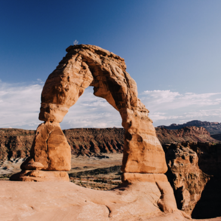
ពេលវេលារបស់យើងនៅលើផែនដីត្រូវបានរាប់លេខហើយដូច្នេះគឺជាឱកាសរបស់យើងសម្រាប់ការធ្វើដំណើរនៅលើពិភពលោក។ ដូច្នេះហេតុអ្វីបានជាយើងមិនទាញយកប្រយោជន៍ពីកន្លែងដ៏ស្រស់ស្អាតនិងគួរឱ្យស្ញប់ស្ញែងដែលពិភពលោកត្រូវផ្តល់ឱ្យមុនពេលយើងឆ្លងកាត់សិរីល្អនៅពេលថ្ងៃលិច? មិនថាសន្សំសម្រាប់ក្តីសុបិន្តវិស្សមកាលឬដឹងប្រាកដថាទីបញ្ចប់នៃពិភពលោកជិតមកដល់នោះទេយើងទាំងអស់គ្នាគួរតែមានកន្លែងដាក់ធុងសម្រាប់មើល។ ជាមួយនឹងពិភពលោកនំរបស់យើងបញ្ជីនេះហាក់ដូចជាគ្មានទីបញ្ចប់។ ខាងក្រោមនេះគឺជាបញ្ជីដាក់ធុងនៃទីតាំង 15 ដែលអ្នកអាចទៅរៀនមុនពេលអ្នកស្លាប់។
1.ពើរ៉ាម៉ីដនៃជីហ្សេអេប្រទេសអេហ្ស៊ីព
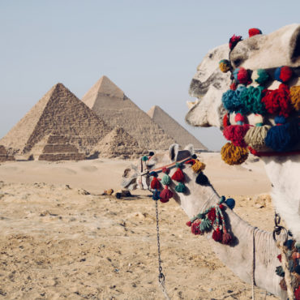ត្រូវបានគេទទួលស្គាល់ថាជាអច្ឆរិយវត្ថុមួយក្នុងចំណោមអច្ឆរិយវត្ថុចំនួនប្រាំពីរនៃពិភពលោកបុរាណនេះភាពចម្លែកនៃស្ថាបត្យកម្មដ៏មិនចេះចប់នេះបានធ្វើឱ្យពួកអ្នកវិទ្យាសាស្ត្រមានការភ្ញាក់ផ្អើលជាមួយនឹងការសាងសង់ពីចម្ងាយនិងបន្ទប់កប់ខ្មោច។ កាលបរិច្ឆេទត្រលប់ទៅឆ្នាំប្រហែល 2.560 ម។ គ។ សាជីក្រាមអេហ្ស៊ីបបានឈរជារចនាសម្ព័នបុរសខ្ពស់ជាងគេអស់រយៈពេលជាង 3.800 ឆ្នាំដែលធ្វើឱ្យវាជាកន្លែងដែលអ្នកត្រូវតែមកលេង។។
1.STONEHENGE, ប្រទេសអង់គ្លេស
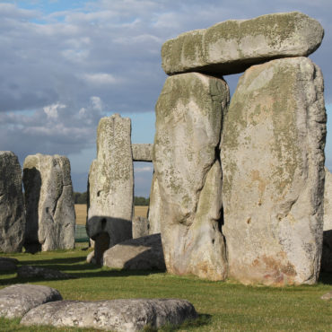ផ្ទាំងថ្ម 25 តោនដែលត្រូវបានគេអះអាងថាសាងសង់កាលពីជាង 3000 ឆ្នាំមុនគឺជាអាថ៌កំបាំងនៃស្ថាបត្យកម្មមួយទៀតដែលបានរកឃើញអ្នកបុរាណវិទូជាច្រើន។ អ្នកគួររីករាយនឹងទេសភាពថ្ងៃលិចដ៏គួរឱ្យភ្ញាក់ផ្អើលដែលបញ្ចេញពន្លឺតាមរយៈថ្មនៅពេលដែលអ្នកស្តាប់មគ្គុទេសក៍ទេសចរណ៍អូឌីយ៉ូព័ត៌មាន។
3.មហោស្រពធំនៅអារីហ្សូណាអាមេរិច
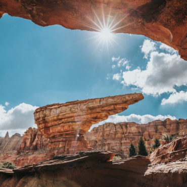ដង្ហើម - យកជញ្ជាំងថ្មប្រវែង 200 ម៉ាយដែលអាចមើលឃើញទន្លេខូឡូរ៉ាដូមិនអាចយល់បានទេបើគ្មាននៅទីនោះ។ ការមើលស្រមោលនៅលើស្រទាប់ថ្មភ្នំភ្លើងស្រស់ស្អាតរហូតដល់ថ្ងៃលិចគឺជាទស្សនីយភាពដ៏អស្ចារ្យ។
4.ជញ្ជាំងដ៏អស្ចារ្យនៃប្រទេសចិន
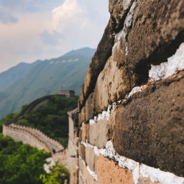បន្ថែមលើបញ្ជីវិស្វកម្មដ៏អស្ចារ្យបំផុតរបស់មនុស្សជាតិរបស់យើងជញ្ជាំងដ៏អស្ចារ្យនៃប្រទេសចិនដែលបានកសាងជាលើកដំបូងជាង 2000 ឆ្នាំមកហើយនោះផ្តល់នូវទេសភាពដ៏ស្រស់ស្អាតនៃភ្នំទេសភាពដ៏ស្រស់ស្អាត។ បានកសាងឡើងជាស៊េរីបន្ទាយការពារដើម្បីទប់ស្កាត់ការឈ្លានពាននៅភាគខាងជើងនិងគ្រប់គ្រងផ្លូវពាណិជ្ជកម្មដូចជាផ្លូវសូត្រជញ្ជាំងដ៏អស្ចារ្យគឺជាការអស្ចារ្យដែលគួរឱ្យចង់ឃើញសម្រាប់អ្នកដែលស្រឡាញ់ប្រវត្តិសាស្ត្រនិងធម្មជាតិ។
5.រេដវដាប់ប៊លរីសអាមេរិច
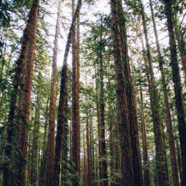ដើមឈើក្រហមនៅភាគខាងជើងនៃរដ្ឋកាលីហ្វ័រញ៉ាគឺជាជម្រកដែលមានកំពស់ខ្ពស់ជាងគេបំផុតនៅលើពិភពលោកដែលជាទស្សនីយភាពធម្មជាតិដែលអ្នកមិនគួរខកខាន។
6.YELLOWSTONE NATIONAL PARK, សហរដ្ឋអាមេរិក
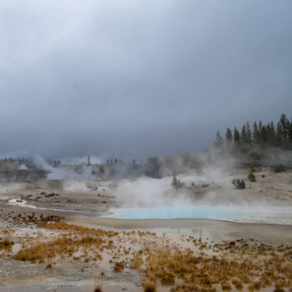សាខានៅទូទាំងរដ្ឋទាំង 3 នៃរដ្ឋវីយ៉ូមីងម៉ុនតាណានិងអៃដាហូទឹកកកដ៏ល្បីល្បាញរបស់ Geyser និង Mammoth គឺជាកន្លែងដ៏ស្រស់ស្អាតសម្រាប់អ្នកដែលស្រឡាញ់ធម្មជាតិ។ អ្នកពិតជាគួរកក់ដំណើរកម្សាន្តមួយសម្រាប់ទេសភាពដ៏ផ្អែមល្ហែមរបស់មហោស្រពដ៏អស្ចារ្យមួយនៅអាមេរិច។
7.TAJ MAHAL, AGRA, UTTAR PRADESH, ប្រទេសឥណ្ឌា
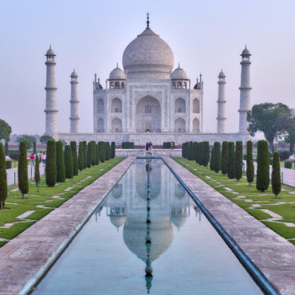ប្រាសាទនេះសាងសង់ដោយ Shah Jahan ក្នុងឆ្នាំ 1631 ជាកិត្តិយសសម្រាប់ប្រពន្ធពែរ្សរបស់គាត់។ ចម្លាក់ថ្មម៉ាបពណ៌សនេះជាស្នាដៃស្ថាបត្យកម្មមួយ។ ទាក់ទាញអ្នកទស្សនាជាង 3 លាននាក់ក្នុងមួយឆ្នាំតំបន់បេតិកភណ្ឌពិភពលោករបស់អង្គការយូណេស្កូគឺជាកន្លែងដែលអ្នកត្រូវកោតសរសើរនៅពេលអ្នកកំពុងសម្រាកវិស្សមកាលនៅទីនោះ។
8.ANGKOR WATក្រុងសៀមរាម, ប្រទេសកម្ពុជា
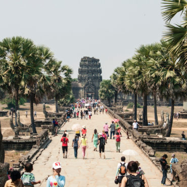ប្រាសាទនេះត្រូវបានសាងសង់ឡើងនៅសតវត្សទី 12 ដោយមានប្រាសាទអង្គរវត្តនិងប្រាសាទហិណ្ឌូចម្រុះអង្គរវត្តគឺជាប្រាសាទដែលត្រូវធ្វើដំណើរកំសាន្ត។ បំពេញដោយប្រាសាទដែលមានទំពាំងបាយជូរដែលមានទេសភាពស្រស់បំព្រងទេសភាពព្រះអាទិត្យរះនិងទេសភាពថ្ងៃលិចហើយល្បីល្បាញដោយសារការធ្វើជាម្ចាស់ផ្ទះខ្សែភាពយន្តហូលីវូដ Tomb Raider និងរដ្ឋ Indiana Jones ដែលទទួលបានកន្លែងល្អសម្រាប់បញ្ជីដាក់ធុង។
9.MACHU PICCHU, PERU
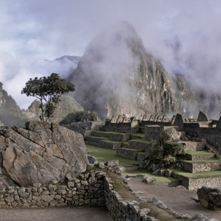កាលបរិច្ឆេទត្រលប់ទៅសតវត្សទី 15 នៅខាងលើជ្រលងសក្ការៈគឺជាប្រាសាទ Inca បុរាណនៅលើភ្នំ 7.900 ជើង។ ហ៊ុំព័ទ្ធទៅដោយទេសភាពដ៏ស្រស់ស្អាតនៃជួរភ្នំអណ្តូងវាជាកន្លែងត្រូវតែបញ្ឈប់សម្រាប់អ្នកដាក់ធុងបញ្ជី។
10.VICTORIA FALLS, LIVINGSTONE, ZAMBIA
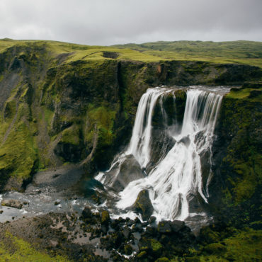ទឹកជ្រោះខ្ពស់ 354 ដែលគួរឱ្យចាប់អារម្មណ៍នេះគឺជាកន្លែងធំបំផុតនៅក្នុងពិភពលោក។ ទឹកប្រៃជាង 260.000 លីត្រចាក់ចូលក្នុងតម្រងដ៏ធំសម្បើមនេះ។ ជាមួយនឹងឱកាសមួយដើម្បីមើលឃើញគំនរឥន្ទធនូនៅលើទឹកជ្រោះនោះការថតរូបគឺជាឱកាសធ្វើដំណើរដែលមិនអាចទ្រាំបាន។
11.វេនីសអ៊ីតាលី
បរិវេណផ្លូវលំដ៏ស្រស់ស្អាតនៃទីក្រុងនេះគឺជាមន្តស្នេហ៍សម្រាប់អ្នកស្រឡាញ់វប្បធម៌និងអ្នកសុបិនវិស្សមកាល។ រីករាយនឹងភាពប្រណីតនៃរសជាតិផ្អែមឆ្ងាញ់អ៊ីតាលីនៅក្បែរស្អាត Piazza សាន់ម៉ាកូគឺជាភារកិច្ចត្រូវធ្វើ។
12.JERUSALEM, អ៊ីសារ៉ាល
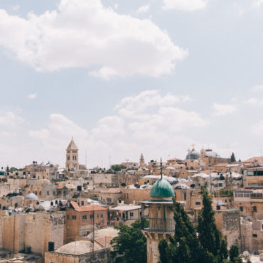ទីក្រុងប្រវត្ដិសាស្ដ្រគឺជាគ្រឹះសំខាន់មួយនៃសាសនាគ្រីស្ទសាសនាអ៊ីស្លាមនិងសាសនាយូដា។ ដោយមានទំរង់ជាច្រើននៃបូជនីយដ្ឋានបុរាណដូចជាជញ្ជាំងខាងលិចនិងប្រាសាទភ្នំព្រមទាំងផ្សារចាស់ផងនោះអ្នកនឹងមានបទពិសោធន៍វប្បធម៌ដ៏សំបូរបែប។ កុំភ្លេចធ្វើដំណើរទៅតំបន់យូណេស្កូជាច្រើន។
13.THE GREAT BARRIER REEF, AUSTRALIA
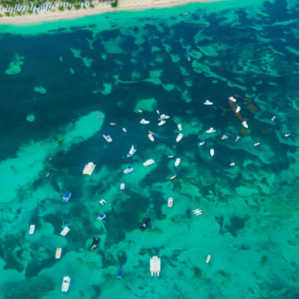ជ្រមុជទឹកចូលទៅក្នុងទឹកសមុទ្រនៃថ្មប៉ប្រះទឹកផ្កាថ្មធំជាងគេបំផុតនៅឆ្នេរសមុទ្រ Queensland ប្រទេសអូស្ត្រាលីគឺជាបទពិសោធន៏មួយ។ ការស្វែងយល់ពីជីវិតសមុទ្រក្រោមទឹកប្រវែង 1.400 គីឡូម៉ែត្រគ្មានទីបញ្ចប់គឺវិស្សមកាលដែលអ្នកនឹងសរសេរនៅផ្ទះអំពីរយៈពេលជាច្រើនឆ្នាំ។
14.RIO DE JANEIRO, ប្រេស៊ីល
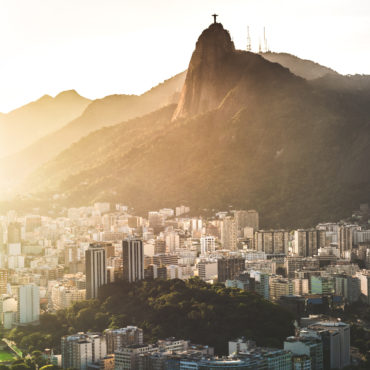ត្រូវបានគេស្គាល់ថាជា "ទីក្រុងដ៏អស្ចារ្យ" ជាមួយនឹងរូបចម្លាក់ដ៏ល្បីរបស់ព្រះគ្រីស្ទដែលជាព្រះប្រោសលោះដែលជាទីក្រុងធំបំផុតទី 2 របស់ប្រទេសប្រេស៊ីលដែលមានឆ្នេរសមុទ្រស្រស់ស្អាតបំផុតនៅលើពិភពលោកជាប់នឹងព្រៃឈើជ្រៅ។ ការរាំតាមដងផ្លូវរីករាយក្នុងអំឡុងមហោស្រព Samba គឺជាព្រឹត្តិការណ៍ដែលមិនអាចបំភ្លេចបានដែលអ្នកនឹងត្រូវជួបប្រទះម្តងក្នុងជីវិត។
15.ICELAND
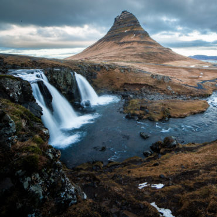គ្មានពាក្យជាច្រើនអាចពិពណ៌នាអំពីសម្រស់ធម្មជាតិដ៏គួរឱ្យចាប់អារម្មណ៍នៃកោះភ្នំភ្លើងនេះនៅភាគខាងជើងអាត្លង់ទិច។ ពីបន្ទុះភ្នំភ្លើងទម្លាក់ទៅទឹកជ្រោះនិងក្ដៅទឹកក្តៅសូមឱបខ្លួនអ្នកសម្រាប់ការផ្សងព្រេងដ៏គួរអោយភ្ញាក់ផ្អើលមួយនៅពេលអ្នកចូលរួមក្នុងដំណើរកម្សាន្តខាងក្រៅនៃតំបន់អាក់ទិកផ្សងព្រេង។ អ្នកនឹងមានជិះសេះពេលវេលាល្អមែនទែនជិះនៅជុំវិញភ្នំភ្លើងដ៏ស្រស់ស្អាតនិងទឹកកកឡើងជណ្តើរថ្មើរជើងខ្ពស់។
ព័ត៌មានបន្ទាប់៖ បុគ្គលឆ្នើម និងល្បីល្បាញ ០៥ រូប ដែលធ្លាប់មានប្រវត្តិតោកយ៉ាក